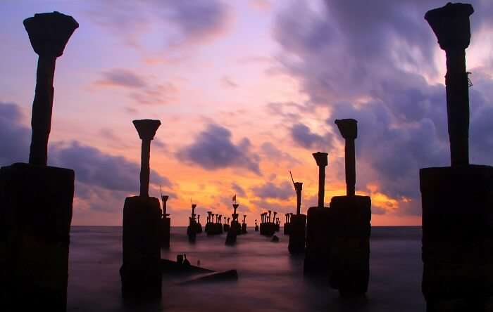
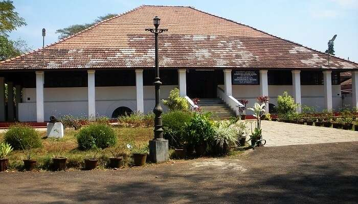
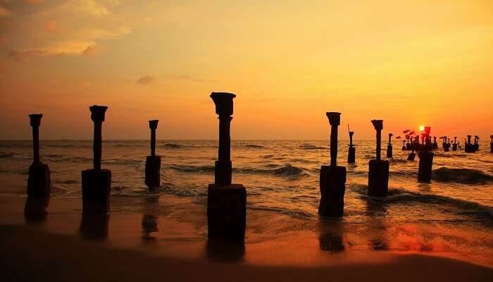

Places to visit in Kozhikode

Kerala is a home to a variety of landscapes and anyone who’s come across this God’s own country would surely agree. Calicut or much famed as Kozhikode, is one such beautiful city in Kerala that feel like every traveller’s dream. A pristine haven in nature, Kozhikode is filled with lush greenery, tranquil beaches, and historical forts. Also serving as the perfect weekend getaway for the locals and nearby travellers, get going to explore these ten amazing places to visit in Calicut which form the essence of the spice capital of Kerala.
- Pazhassi Raja Museum And Art Gallery 
- Thikkoti Light House
- Kozhikode Beach 
- Beypore
- Thali Temple
For all the history lovers, Calicut is the perfect place to be. The Pazhassi Raja Museum and Art Gallery is one of the best places to visit in Calicut. Named after the famous ruler Pazhassi Raja who fought the British with the help of tribes, the museum displays a variety of monuments, mural paintings, and old coins.
Location:East Hill, Kozhikode, Kerala
Known to have been constructed on the remains of a shipwreck, the Thikkoti lighthouse is one of the best Calicut attractions to explore. The lighthouse is located on the rocky shoreline and offers scenic views of the sea, and several species of nomadic birds. For those who’re looking forward to spend a quiet day by the sea, look no further than the Thikkoti Light House.
Location: Thikkoti Village, Kozhikode, India
Of all the best beaches Kozhikode is famous for, Calicut beach happens to be an ideal location for tourists who want to unwind themselves from the stress and pollution of the city. If you are keen to discover the river in Kerala, this is one of the perfect places to see in Kozhikode that you need to add to your itinerary. The beach not only offers the best sunrise and sunset views but every year in January, the beach also plays a great host to one of the biggest festivals called the Malabar Mahotsavam.
Location: 1 Km From Railway Station, Kozhikode, India

Located in the heart of Calicut, Beypore is a popular ship building port which is known to be one of the busiest fishing harbours of Kerala. Considered to be one of the best places to visit in Calicut, the Beypore beach also happens to be an important commercial center for building the ships. While the city is also famed for its unique shipping vessel called “Uru”, do not miss out on going for a ride on the famous two-kilometre long Pulimoodu bridge.
Location: South of Kozhikode Centre, Kozhikode, India

If you are searching for famous temples in Kerala, Thali Temple in Calicut is the right choice for you. Located close to the Mananchira square, the Thali temple is one of the most renowned and oldest temples of Calicut. It is one of the best tourist attractions in Calicut and is dedicated to Lord Shiva. Housing a Shivalinga that measures about 2 ft., the temple is built in the typical Kerala style architecture whihch is a must visit on your next trip.
Location:Bridgestone Apartments, Samooham Road, Palayam, Kozhikode, Kerala 673002